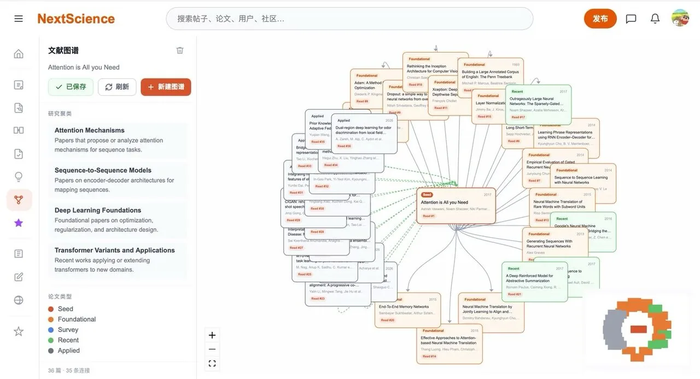

Tejing Wang
Tejing WangUndergraduate in Artificial Intelligence at Shaanxi Normal University, and an incoming master’s student in Computer Science and Technology advised by Prof. Fei Hao.
陕西师范大学人工智能专业本科生，将在本校攻读计算机科学与技术学术型硕士，导师为郝飞教授。
Ich studiere Künstliche Intelligenz im Bachelor an der Shaanxi Normal University und beginne dort demnächst das Masterstudium in Informatik und Technologie, betreut von Prof. Fei Hao.
Formal Concept Analysis Neuro-Symbolic AI Reliability of LLM Knowledge
形式概念分析 神经符号人工智能 大语言模型知识的可靠性
Formale Begriffsanalyse Neurosymbolische KI Verlässlichkeit von LLM-Wissen
Try the interactive concept lattice demo →试试概念格交互演示 →Zur interaktiven Begriffsverband-Demo →
Open to remote collaboration and research internships on formal concept analysis, neuro-symbolic AI, and the reliability of LLM knowledge. 欢迎围绕形式概念分析、神经符号人工智能与大语言模型知识可靠性的远程合作或科研实习。 Offen für Remote-Zusammenarbeit und Forschungspraktika zu Formaler Begriffsanalyse, neurosymbolischer KI und der Verlässlichkeit von LLM-Wissen.
About关于Über mich
I am a student in Artificial Intelligence at Shaanxi Normal University, continuing on to an academic master’s program there in the School of Artificial Intelligence and Computer Science, advised by Prof. Fei Hao.
我是陕西师范大学人工智能专业的学生，本科毕业后将继续在本校人工智能与计算机科学学院攻读学术型硕士学位，导师为郝飞教授。
Ich studiere Künstliche Intelligenz an der Shaanxi Normal University und setze mein Studium dort im forschungsorientierten Masterstudiengang an der Fakultät für Künstliche Intelligenz und Informatik fort, betreut von Prof. Fei Hao.
My research interests center on formal concept analysis, neuro-symbolic AI, and the reliability of what large language models know, alongside graph-based concept cognition learning, explainable AI, LLM-empowered education, digital twins, and embodied intelligence.
我的研究兴趣集中在形式概念分析、神经符号人工智能，以及大语言模型知识的可靠性，同时也关注图概念认知学习、可解释人工智能、大语言模型赋能教育、数字孪生与具身智能。
Meine Forschungsinteressen liegen vor allem in der Formalen Begriffsanalyse, der neurosymbolischen KI und der Verlässlichkeit des Wissens großer Sprachmodelle, daneben im graphbasierten kognitiven Begriffslernen, in erklärbarer KI, LLM-gestützter Bildung, digitalen Zwillingen und verkörperter Intelligenz.
My long-term goal is to pursue a Ph.D. in Artificial Intelligence abroad after my master’s.
我的长期目标是在硕士毕业后赴海外攻读人工智能博士学位。
Mein langfristiges Ziel ist eine Promotion im Bereich Künstliche Intelligenz im Ausland nach dem Masterabschluss.
Research Statement研究陈述Forschungsprofil
My research asks how symbolic, structured knowledge can make large language model systems more interpretable and controllable. In my undergraduate work on automated geography question answering, I combined large language models with three-way concept analysis to turn implicit textbook knowledge into explicit decision rules — an early attempt at grounding a black-box model in something a person can inspect and reason about.
我关心的问题是：结构化的符号知识如何能让大语言模型系统变得更可解释、更可控。在本科阶段的地理自动解题研究中，我把大语言模型与三支概念分析结合起来，把教材中隐含的知识转化为显式的决策规则——这是我第一次尝试让一个“黑箱”模型的推理过程变得可以被人检查和追问。
Meine Forschung fragt, wie symbolisches, strukturiertes Wissen Systeme auf Basis großer Sprachmodelle interpretierbarer und kontrollierbarer machen kann. In meiner Arbeit im Bachelorstudium zur automatisierten Beantwortung von Geographiefragen habe ich große Sprachmodelle mit der Drei-Wege-Begriffsanalyse (Three-Way Concept Analysis) verbunden, um implizites Lehrbuchwissen in explizite Entscheidungsregeln zu überführen – ein früher Versuch, ein Blackbox-Modell auf etwas zu stützen, das ein Mensch nachprüfen und nachvollziehen kann.
This concern with structure carries into my current work: a survey of neuro-symbolic agentic AI, organized around planning, memory, and safety/verification, and a longer-term interest of mine in graph-based concept cognition learning — using graph structures to represent and reason over concepts, in the same spirit as how three-way concept analysis represents formal contexts.
这种对“结构”的关注延续到了我目前的工作中：一篇聚焦规划、记忆与安全/验证的神经符号智能体综述，以及我更长期的兴趣方向——图概念认知学习，即用图结构来表示和推理概念，其思路与三支概念分析表示形式背景的方式一脉相承。
Dieses Interesse an Struktur prägt auch meine aktuelle Arbeit: einen Übersichtsartikel zu neurosymbolischer agentischer KI, gegliedert nach Planung, Gedächtnis sowie Sicherheit/Verifikation, und mein längerfristiges Interesse am graphbasierten kognitiven Begriffslernen – Graphstrukturen zu nutzen, um Begriffe darzustellen und über sie zu schließen, im selben Geist, in dem die Drei-Wege-Begriffsanalyse formale Kontexte darstellt.
Going forward, I want to use formal concept structures to audit and repair what large language models know about concepts. A concept lattice states exactly which objects fall under a concept, which attributes define it, and how concepts are ordered — a precise reference against which a model’s answers can be checked, so that the gaps and contradictions in its conceptual knowledge can be located and then corrected, not just observed. This is the question I want to work on through my master’s and on into a Ph.D.
接下来，我希望用形式化的概念结构去审计和修正大语言模型的概念知识。概念格明确给出了一个概念包含哪些对象、由哪些属性定义，以及概念之间的层次关系——它可以作为一个精确的参照，用来检验模型的回答，从而定位模型概念知识中的缺失与矛盾，并进一步加以修正，而不只是指出问题。这是我希望在硕士阶段展开、并延续到博士阶段的问题。
Künftig möchte ich formale Begriffsstrukturen nutzen, um das begriffliche Wissen großer Sprachmodelle zu prüfen und zu korrigieren. Ein Begriffsverband legt genau fest, welche Gegenstände unter einen Begriff fallen, welche Merkmale ihn bestimmen und wie die Begriffe geordnet sind – eine präzise Referenz, an der sich die Antworten eines Modells messen lassen, sodass Lücken und Widersprüche in seinem Begriffswissen gefunden und anschließend behoben werden können, statt sie nur festzustellen. Dieser Frage möchte ich im Masterstudium und darüber hinaus in einer Promotion nachgehen.
You can find the papers behind this work, organized by project with my own reading notes, in my Notes section.
这些工作背后阅读过的论文，按项目分类并附有我的阅读笔记，可以在我的笔记栏目中查看。
Die Artikel hinter dieser Arbeit, nach Projekten geordnet und mit meinen eigenen Lesenotizen versehen, finden Sie in meinen Notizen.
Publications论文发表Publikationen
Manuscripts in Preparation撰写中的稿件Manuskripte in Vorbereitung
News动态Aktuelles
Admitted to the academic master’s program at Shaanxi Normal University (starting Sep 2027), advised by Prof. Fei Hao.
获得陕西师范大学学术型硕士录取资格，2027 年 9 月入学，导师为郝飞教授。
Zulassung zum forschungsorientierten Masterstudiengang an der Shaanxi Normal University (Beginn: Sept. 2027), betreut von Prof. Fei Hao.
Concluded my undergraduate research assistantship at Xidian University with Prof. Zhihan Lyu.
结束了在西安电子科技大学吕智涵教授课题组的本科生科研助理工作。
Meine Tätigkeit als studentische Forschungshilfskraft an der Xidian University bei Prof. Zhihan Lyu ist abgeschlossen.
Finalized the research scope for a survey on neuro-symbolic agentic AI, organized around planning, memory, and safety/verification.
确定了神经符号智能体综述的研究范围，围绕规划、记忆与安全/验证三部分展开。
Den Themenumfang für einen Übersichtsartikel zu neurosymbolischer agentischer KI festgelegt – gegliedert nach Planung, Gedächtnis sowie Sicherheit/Verifikation.
Started my undergraduate research assistantship at Xidian University, supervised by Prof. Zhihan Lyu.
开始在西安电子科技大学吕智涵教授课题组担任本科生科研助理。
Beginn meiner Tätigkeit als studentische Forschungshilfskraft an der Xidian University, betreut von Prof. Zhihan Lyu.
Submitted my first-author paper on automated geography QA system based on LLM and three-way concept analysis to Applied Soft Computing.
以第一作者身份将基于大语言模型与三支概念分析的地理试题自动解答系统的论文投稿至 Applied Soft Computing。
Meinen Artikel in Erstautorschaft über ein automatisiertes Frage-Antwort-System für Geographie auf Basis von LLMs und Drei-Wege-Begriffsanalyse bei Applied Soft Computing eingereicht.
Started work on the automated geography QA system based on LLM and three-way concept analysis, supervised by Prof. Fei Hao.
在郝飞教授指导下开始进行基于大语言模型与三支概念分析的地理试题自动解答系统的研发工作。
Beginn der Arbeit am automatisierten Frage-Antwort-System für Geographie auf Basis von LLMs und Drei-Wege-Begriffsanalyse, betreut von Prof. Fei Hao.
Education教育背景Ausbildung
M.S. in Computer Science and Technology (Academic Master’s)
计算机科学与技术学术型硕士
M.Sc. in Informatik und Technologie (forschungsorientierter Master)
School of Artificial Intelligence and Computer Science · Xi’an, China
人工智能与计算机科学学院 · 中国西安
Fakultät für Künstliche Intelligenz und Informatik · Xi’an, China
Advisor: Prof. Fei Hao
导师：郝飞教授
Betreuung: Prof. Fei Hao
Research direction: Graph Learning, Concept Learning, Neuro-Symbolic AI
研究方向：图学习、概念学习、神经符号人工智能
Forschungsrichtung: Graph Learning, Begriffslernen, neurosymbolische KI
B.Eng. in Artificial Intelligence
人工智能工学学士
B.Eng. in Künstlicher Intelligenz
School of Artificial Intelligence and Computer Science · Xi’an, China
人工智能与计算机科学学院 · 中国西安
Fakultät für Künstliche Intelligenz und Informatik · Xi’an, China
Experience科研经历Erfahrung
Undergraduate Research Assistant · Supervised by Prof. Fei Hao
本科生科研助理 · 导师： 郝飞教授
Studentische Forschungshilfskraft · Betreut von Prof. Fei Hao
Research topics: large language models, knowledge-driven intelligent systems, educational AI, and interpretable reasoning.
研究方向：大语言模型、知识驱动的智能系统、教育人工智能与可解释推理。
Forschungsthemen: große Sprachmodelle, wissensbasierte intelligente Systeme, KI in der Bildung und interpretierbares Schließen.
Undergraduate Research Assistant · Supervised by Prof. Zhihan Lyu
本科生科研助理 · 导师： 吕智涵教授
Studentische Forschungshilfskraft · Betreut von Prof. Zhihan Lyu
Explored digital twins and embodied cells — how physical entities and virtual models can be linked through sensing, mapping, and interaction.
接触数字孪生与具身细胞方向：了解物理实体与虚拟模型之间如何通过感知、映射与交互建立联系。
Beschäftigung mit digitalen Zwillingen und Embodied Cells – damit, wie sich physische Objekte und virtuelle Modelle durch Sensorik, Abbildung und Interaktion verknüpfen lassen.
Projects项目经历Projekte
Automated Geography Question Answering with LLMs and Three-Way Concept Analysis
融合大语言模型与三支概念分析的地理试题自动解答
Automatisierte Beantwortung von Geographiefragen mit LLMs und Drei-Wege-Begriffsanalyse
First-author research · Under review at Applied Soft Computing · Advisor: Prof. Fei Hao
第一作者研究工作 · Applied Soft Computing 审稿中 · 导师：郝飞教授
Forschungsarbeit in Erstautorschaft · In Begutachtung bei Applied Soft Computing · Betreuung: Prof. Fei Hao
A system that answers geography multiple-choice questions by combining a large language model with three-way concept analysis. It turns implicit textbook knowledge into explicit decision rules — an attempt to ground a black-box model in reasoning that a person can inspect.
一个回答地理选择题的系统，把大语言模型与三支概念分析结合起来，将教材中隐含的知识转化为显式的决策规则——尝试让“黑箱”模型的推理过程变得可以被人检查。
Ein System, das Multiple-Choice-Fragen der Geographie beantwortet, indem es ein großes Sprachmodell mit der Drei-Wege-Begriffsanalyse verbindet. Es überführt implizites Lehrbuchwissen in explizite Entscheidungsregeln – ein Versuch, ein Blackbox-Modell auf Schlussfolgerungen zu stützen, die ein Mensch nachprüfen kann.
- Input输入Eingabe Textbook knowledge + question教材知识 + 题目Lehrbuchwissen + Frage
- Method方法Methode LLM + three-way concept analysis大语言模型 + 三支概念分析LLM + Drei-Wege-Begriffsanalyse
- Output输出Ausgabe Explicit decision rules → answer显式决策规则 → 作答Explizite Entscheidungsregeln → Antwort
NextScience — AI Research Platform for Early-Career Scientists
NextScience —— 面向早期科研人员的 AI 研究平台
NextScience – KI-Forschungsplattform für Nachwuchsforschende
An AI-powered academic research platform built solo (Next.js, Supabase, DeepSeek API), featuring an AI Reader for paper summarization, a Literature Map for visualizing citation networks (Semantic Scholar + OpenAlex + React Flow), and Nova, an AI research mentor for personalized research planning. No longer actively maintained, but still live at nextscience.space.
独立设计与开发的 AI 学术研究平台（技术栈：Next.js、Supabase、DeepSeek API），核心功能包括论文智能摘要的 AI Reader、基于 Semantic Scholar 与 OpenAlex 数据构建的文献关系图谱（React Flow 可视化），以及提供个性化科研规划的 AI 导师 Nova。目前已停止运营维护，但网站仍可正常访问：nextscience.space。
Eine im Alleingang entwickelte KI-gestützte Plattform für akademische Forschung (Next.js, Supabase, DeepSeek API) mit einem AI Reader zur Zusammenfassung von Artikeln, einer Literature Map zur Visualisierung von Zitationsnetzwerken (Semantic Scholar + OpenAlex + React Flow) und Nova, einem KI-Mentor für die persönliche Forschungsplanung. Wird nicht mehr aktiv gepflegt, ist aber weiterhin erreichbar unter nextscience.space.

Embodied Cell — Early-Stage Exploration
具身细胞——早期探索
Embodied Cell – Erkundung in einer frühen Phase
Research assistantship at Xidian University · Mar – Sep 2026 · Advisor: Prof. Zhihan Lyu
西安电子科技大学科研助理 · 2026 年 3 月至 9 月 · 导师：吕智涵教授
Forschungshilfskraft an der Xidian University · März – Sept. 2026 · Betreuung: Prof. Zhihan Lyu
An exploratory project on embodied, environment-reactive systems: an ESP32-based physical prototype (light, force and time-of-flight sensors driving RGBW LEDs), paired with a Unity digital-twin simulation of fungal hyphal networks and synthetic cells.
一个关于具身、能对环境作出反应的系统的探索性项目：基于 ESP32 的实体原型（光敏、压力和飞行时间传感器驱动 RGBW LED 灯带），配合用 Unity 搭建的数字孪生仿真（模拟真菌菌丝网络与合成细胞）。
Ein exploratives Projekt zu verkörperten, umgebungsreaktiven Systemen: ein ESP32-Prototyp (Licht-, Kraft- und Time-of-Flight-Sensoren steuern RGBW-LEDs) und ein digitaler Zwilling in Unity, der Pilzhyphen-Netzwerke und synthetische Zellen simuliert.
Skills技能Kenntnisse
- Artificial Intelligence人工智能Künstliche Intelligenz
- Formal concept analysis and three-way concept analysis; machine learning and deep learning; LLM application development and agent systems形式概念分析与三支概念分析；机器学习与深度学习；大语言模型应用开发与智能体系统Formale Begriffsanalyse und Drei-Wege-Begriffsanalyse; maschinelles Lernen und Deep Learning; Entwicklung von LLM-Anwendungen und Agentensystemen
- Research科研能力Forschung
- Literature review and reproduction; experimental design and comparative analysis; academic writing in Chinese and English; LaTeX文献阅读与复现；实验设计与对比分析；中英文科研写作；LaTeX 排版Literaturrecherche und Reproduktion von Ergebnissen; Versuchsplanung und vergleichende Analyse; wissenschaftliches Schreiben auf Chinesisch und Englisch; LaTeX
- Programming & Engineering编程与工程Programmierung & Technik
- Python, C++, Linux; full-stack web development (Next.js, FastAPI, Supabase); embedded hardware (ESP32, sensors, LED systems)Python、C++、Linux；全栈 Web 开发（Next.js、FastAPI、Supabase）；嵌入式硬件（ESP32、传感器、LED 系统）Python, C++, Linux; Full-Stack-Webentwicklung (Next.js, FastAPI, Supabase); Embedded-Hardware (ESP32, Sensoren, LED-Systeme)
- Design & Modeling设计与建模Design & Modellierung
- 3D modeling in Onshape; Unity, learned through a digital-twin projectOnshape 三维建模；Unity（在数字孪生项目中学习）3D-Modellierung in Onshape; Unity, erlernt in einem Digital-Twin-Projekt
- Languages语言Sprachen
- Mandarin Chinese (native); English — working proficiency中文（母语）；英语——可用于科研阅读与写作Chinesisch (Mandarin, Muttersprache); Englisch – gute Arbeitskenntnisse
- LLM tools大模型工具LLM-Werkzeuge
- ChatGPT, Claude, Codex for coding and writingChatGPT、Claude、Codex，用于编程与写作ChatGPT, Claude, Codex zum Programmieren und Schreiben
Awards & Honors获奖情况Preise & Auszeichnungen
Competitions
竞赛获奖
Wettbewerbe
- National First Prize, China Robot and Artificial Intelligence Competition (2025)
- National First Prize, Geography Teaching AI Innovation Achievement Competition (2025)
- National Third Prize, Global Campus Artificial Intelligence Algorithm Elite Competition (2025)
- 中国机器人及人工智能大赛 · 国家级一等奖（2025）
- 地理教学人工智能创新成果评比 · 国家级一等奖（2025）
- 全球校园人工智能算法精英大赛 · 国家级三等奖（2025）
- Nationaler erster Preis, China Robot and Artificial Intelligence Competition (2025)
- Nationaler erster Preis, Geography Teaching AI Innovation Achievement Competition (2025)
- Nationaler dritter Preis, Global Campus Artificial Intelligence Algorithm Elite Competition (2025)
- Provincial First Prize (Shaanxi), China Robot and Artificial Intelligence Competition (2025)
- Provincial Second Prize (Shaanxi), Global Campus Artificial Intelligence Algorithm Elite Competition (2025)
- Second Prize, Information Security and Adversarial Technology Competition, Northwest Region (2025)
- Third Prize, China Collegiate Computing Design Competition, Northwest Region (2024)
- 中国机器人及人工智能大赛（陕西赛区）· 省级一等奖（2025）
- 全球校园人工智能算法精英大赛（陕西赛区）· 省级二等奖（2025）
- 信息安全与对抗技术竞赛（西北赛区）· 二等奖（2025）
- 中国计算机设计大赛（西北地区赛）· 三等奖（2024）
- Erster Preis auf Provinzebene (Shaanxi), China Robot and Artificial Intelligence Competition (2025)
- Zweiter Preis auf Provinzebene (Shaanxi), Global Campus Artificial Intelligence Algorithm Elite Competition (2025)
- Zweiter Preis, Information Security and Adversarial Technology Competition, Region Nordwest (2025)
- Dritter Preis, China Collegiate Computing Design Competition, Region Nordwest (2024)
Software Copyrights
软件著作权
Software-Urheberrechte
- “Weather Teaching Assistant Platform” (Reg. No. 16269380)
- “Deep Learning-Based Face Recognition Classroom Attendance System” (Reg. No. 16202857)
- 《气象教学助手平台》（登记号：16269380）
- 《基于深度学习的人脸识别课堂签到系统》（登记号：16202857）
- „Weather Teaching Assistant Platform“ (Reg.-Nr. 16269380)
- „Deep Learning-Based Face Recognition Classroom Attendance System“ (Reg.-Nr. 16202857)
Contact联系方式Kontakt
Open to remote collaboration and research internships on formal concept analysis, neuro-symbolic AI, and the reliability of LLM knowledge — feel free to get in touch. 欢迎围绕形式概念分析、神经符号人工智能与大语言模型知识可靠性的远程合作或科研实习，欢迎随时联系。 Offen für Remote-Zusammenarbeit und Forschungspraktika zu Formaler Begriffsanalyse, neurosymbolischer KI und der Verlässlichkeit von LLM-Wissen – schreiben Sie mir gern.